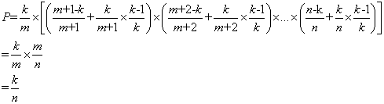

<!DOCTYPE html>
<html>
<head><meta name="generator" content="Hexo 3.8.0">
  <meta charset="utf-8">
  

  
  <title>Histograms | Imoko</title>
  <meta name="viewport" content="width=device-width, initial-scale=1, maximum-scale=1">
  <meta name="description" content="A Histogram measures the distribution of values in a stream of data 直方图描述数据流中的数据分布情况。 直方图不仅仅能提供最大，最小，平均值，而且可以提供median（中位线）或者99th线。 计算直方图的基本方法：排序。但是对吞吐量大，低延迟要求的系统，不适用。下面介绍下常用的方法。 dropwizard一个开源的Metrics">
<meta property="og:type" content="article">
<meta property="og:title" content="Histograms">
<meta property="og:url" content="http://yoursite.com/2018/11/09/Histograms/index.html">
<meta property="og:site_name" content="Imoko">
<meta property="og:description" content="A Histogram measures the distribution of values in a stream of data 直方图描述数据流中的数据分布情况。 直方图不仅仅能提供最大，最小，平均值，而且可以提供median（中位线）或者99th线。 计算直方图的基本方法：排序。但是对吞吐量大，低延迟要求的系统，不适用。下面介绍下常用的方法。 dropwizard一个开源的Metrics">
<meta property="og:locale" content="default">
<meta property="og:image" content="http://yoursite.com/2018/11/09/Histograms/1338455236_7354.png">
<meta property="og:updated_time" content="2018-11-22T06:43:55.000Z">
<meta name="twitter:card" content="summary">
<meta name="twitter:title" content="Histograms">
<meta name="twitter:description" content="A Histogram measures the distribution of values in a stream of data 直方图描述数据流中的数据分布情况。 直方图不仅仅能提供最大，最小，平均值，而且可以提供median（中位线）或者99th线。 计算直方图的基本方法：排序。但是对吞吐量大，低延迟要求的系统，不适用。下面介绍下常用的方法。 dropwizard一个开源的Metrics">
<meta name="twitter:image" content="http://yoursite.com/2018/11/09/Histograms/1338455236_7354.png">
  
    <link rel="alternate" href="/atom.xml" title="Imoko" type="application/atom+xml">
  
  
    <link rel="icon" href="/favicon.png">
  
  
    <link href="//fonts.googleapis.com/css?family=Source+Code+Pro" rel="stylesheet" type="text/css">
  
  <link rel="stylesheet" href="/css/style.css">
</head>
</html>
<body>
  <div id="container">
    <div id="wrap">
      <header id="header">
  <div id="banner"></div>
  <div id="header-outer" class="outer">
    <div id="header-title" class="inner">
      <h1 id="logo-wrap">
        <a href="/" id="logo">Imoko</a>
      </h1>
      
    </div>
    <div id="header-inner" class="inner">
      <nav id="main-nav">
        <a id="main-nav-toggle" class="nav-icon"></a>
        
          <a class="main-nav-link" href="/">Home</a>
        
          <a class="main-nav-link" href="/archives">Archives</a>
        
      </nav>
      <nav id="sub-nav">
        
          <a id="nav-rss-link" class="nav-icon" href="/atom.xml" title="RSS Feed"></a>
        
        <a id="nav-search-btn" class="nav-icon" title="Search"></a>
      </nav>
      <div id="search-form-wrap">
        <form action="//google.com/search" method="get" accept-charset="UTF-8" class="search-form"><input type="search" name="q" class="search-form-input" placeholder="Search"><button type="submit" class="search-form-submit">&#xF002;</button><input type="hidden" name="sitesearch" value="http://yoursite.com"></form>
      </div>
    </div>
  </div>
</header>
      <div class="outer">
        <section id="main"><article id="post-Histograms" class="article article-type-post" itemscope="" itemprop="blogPost">
  <div class="article-meta">
    <a href="/2018/11/09/Histograms/" class="article-date">
  <time datetime="2018-11-08T16:00:00.000Z" itemprop="datePublished">2018-11-09</time>
</a>
    
  </div>
  <div class="article-inner">
    
    
      <header class="article-header">
        
  
    <h1 class="article-title" itemprop="name">
      Histograms
    </h1>
  

      </header>
    
    <div class="article-entry" itemprop="articleBody">
      
        <p>A <code>Histogram</code> measures the distribution of values in a stream of data</p>
<p>直方图描述数据流中的数据分布情况。</p>
<p>直方图不仅仅能提供最大，最小，平均值，而且可以提供median（中位线）或者99th线。</p>
<p>计算直方图的基本方法：排序。但是对吞吐量大，低延迟要求的系统，不适用。下面介绍下常用的方法。</p>
<h2 id="dropwizard"><a href="#dropwizard" class="headerlink" title="dropwizard"></a>dropwizard</h2><p>一个开源的Metrics库，<a href="https://metrics.dropwizard.io/3.2.3/manual/core.html#exponentially-decaying-reservoirs。采用了下面的方法来统计Histogram。" target="_blank" rel="noopener">https://metrics.dropwizard.io/3.2.3/manual/core.html#exponentially-decaying-reservoirs。采用了下面的方法来统计Histogram。</a></p>
<h3 id="reservoir-sampling-（蓄水池采样）"><a href="#reservoir-sampling-（蓄水池采样）" class="headerlink" title="reservoir sampling （蓄水池采样）"></a>reservoir sampling （蓄水池采样）</h3><blockquote>
<p>在一个给定长度的数组中随机等概率抽取一个数据很容易，但如果面对的是长度未知的海量数据流呢？蓄水池采样(Reservoir Sampling)算法就是来解决这个问题的, 它在分析一些大数据集的时候非常有用。 </p>
<p>先把读到的前k个对象放入“水库”，对于第k+1个对象开始，以k/(k+1)的概率选择该对象，以k/(k+2)的概率选择第k+2个对象，以此类推，以k/m的概率选择第m个对象（m&gt;k）。如果m被选中，则随机替换水库中的一个对象。最终每个对象被选中的概率均为k/n，证明如下</p>
<p>第m个对象被选中的概率=选择m的概率 x（其后元素不被选择的概率+其后元素被选择的概率 x 不替换第m个对象的概率），即</p>
<p></p>
</blockquote>
<ul>
<li><p>Uniform Reservoirs</p>
<p>统计全量数据，通过 <a href="http://www.cs.umd.edu/~samir/498/vitter.pdf" target="_blank" rel="noopener">Vitter’s R</a>算法，来随机选取数据。用于长时间的测量。</p>
</li>
<li><p>Exponentially Decaying Reservoirs</p>
<p>只看最后5分钟的数据，通过使用 <a href="http://dimacs.rutgers.edu/~graham/pubs/papers/fwddecay.pdf" target="_blank" rel="noopener">forward-decaying priority reservoir</a>来对新数据进行指数加权。不像Uniform Reservoirs，它只展示最近的数据，可以让你尽早的发现数据的变化</p>
</li>
<li><p>Sliding Window Reservoirs</p>
<p>只关注最后N个</p>
</li>
<li><p>Sliding Time Window Reservoirs</p>
<p>只关注最后N秒内</p>
</li>
</ul>
<blockquote>
<p>SlidingTimeWindowReservoirs 因为它是无界的，如果被用在一个大吞吐量的系统，会造成大量的内存浪费，因为它记录每一个measurement，所以也是最慢的。</p>
</blockquote>
<p>但是看到了这篇文章：<a href="https://medium.com/hotels-com-technology/your-latency-metrics-could-be-misleading-you-how-hdrhistogram-can-help-9d545b598374" target="_blank" rel="noopener">https://medium.com/hotels-com-technology/your-latency-metrics-could-be-misleading-you-how-hdrhistogram-can-help-9d545b598374</a></p>
<blockquote>
<p>Dropwizard内部默认使用Exponentially decaying Reservoirs （EDR）</p>
<p>但是有以下缺点：</p>
<ul>
<li>EDR设计有损;它们不存储每个样本（它们具有统计学上的代表性）。</li>
<li>默认情况下，EDR存储静态1028个样本，并且样本在过去5分钟内被加权。 </li>
<li>EDR中样本衰减的速率受直方图更新频率的影响。</li>
</ul>
<p>这些缺点加起来意味着您报告的指标可能会产生误导，要么是由于丢弃的样本导致的不准确，要么是通过包含可能更旧的样本来计算的。虽然提供代替方案，但都不适合实时报告。</p>
<p>HdrHistogram（高动态范围直方图）是一种无损直方图实现，具有可配置的值精度，可解决EDR的缺点。 </p>
</blockquote>
<h2 id="HdrHistogram"><a href="#HdrHistogram" class="headerlink" title="HdrHistogram"></a>HdrHistogram</h2><p>//TODO</p>
<hr>

      
    </div>
    <footer class="article-footer">
      <a data-url="http://yoursite.com/2018/11/09/Histograms/" data-id="cjos8tzgq0007rkwk8xzb5jc9" class="article-share-link">Share</a>
      
      
    </footer>
  </div>
  
    
<nav id="article-nav">
  
    <a href="/2018/11/22/JVM_gc_cms/" id="article-nav-newer" class="article-nav-link-wrap">
      <strong class="article-nav-caption">Newer</strong>
      <div class="article-nav-title">
        
          JVM GC CMS
        
      </div>
    </a>
  
  
    <a href="/2018/11/09/Observable_basic/" id="article-nav-older" class="article-nav-link-wrap">
      <strong class="article-nav-caption">Older</strong>
      <div class="article-nav-title">ReactiveX基础</div>
    </a>
  
</nav>

  
</article>

</section>
        
          <aside id="sidebar">
  
    

  
    

  
    
  
    
  <div class="widget-wrap">
    <h3 class="widget-title">Archives</h3>
    <div class="widget">
      <ul class="archive-list"><li class="archive-list-item"><a class="archive-list-link" href="/archives/2018/11/">November 2018</a></li><li class="archive-list-item"><a class="archive-list-link" href="/archives/2018/10/">October 2018</a></li><li class="archive-list-item"><a class="archive-list-link" href="/archives/2018/08/">August 2018</a></li><li class="archive-list-item"><a class="archive-list-link" href="/archives/2018/07/">July 2018</a></li><li class="archive-list-item"><a class="archive-list-link" href="/archives/2018/05/">May 2018</a></li><li class="archive-list-item"><a class="archive-list-link" href="/archives/2018/04/">April 2018</a></li></ul>
    </div>
  </div>


  
    
  <div class="widget-wrap">
    <h3 class="widget-title">Recent Posts</h3>
    <div class="widget">
      <ul>
        
          <li>
            <a href="/2018/11/22/Java_synchronizer/">JVM Synchronizer</a>
          </li>
        
          <li>
            <a href="/2018/11/22/DBs_mysql_locks/">Mysql Locks</a>
          </li>
        
          <li>
            <a href="/2018/11/22/BTreeStruct/">B-tree数据结构</a>
          </li>
        
          <li>
            <a href="/2018/11/22/hystrix/">Hystrix简介</a>
          </li>
        
          <li>
            <a href="/2018/11/22/consul-simple/">Consul简介</a>
          </li>
        
      </ul>
    </div>
  </div>

  
</aside>
        
      </div>
      <footer id="footer">
  
  <div class="outer">
    <div id="footer-info" class="inner">
      &copy; 2018 Tao<br>
      Powered by <a href="http://hexo.io/" target="_blank">Hexo</a>
    </div>
  </div>
</footer>
    </div>
    <nav id="mobile-nav">
  
    <a href="/" class="mobile-nav-link">Home</a>
  
    <a href="/archives" class="mobile-nav-link">Archives</a>
  
</nav>
    

<script src="//ajax.googleapis.com/ajax/libs/jquery/2.0.3/jquery.min.js"></script>


  <link rel="stylesheet" href="/fancybox/jquery.fancybox.css">
  <script src="/fancybox/jquery.fancybox.pack.js"></script>


<script src="/js/script.js"></script>


  </div>
</body>
</html>